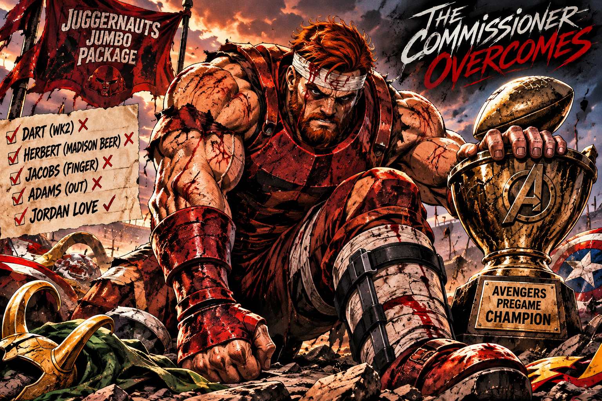

JUGS KEEP ROLLING. MIKE GETS RUN OVER BY FIVE POINTS.
A 186.62–181.54 heavyweight war. The league's best offense survives another contender, and Mike gets punished for being excellent.

Some teams win because their opponents completely forget how to play fantasy football. Then there are the JUGS, who get dragged into a heavyweight title fight and win the damn thing anyway.
Mike's InfinityBrocklet showed up with 181.54 points. In most leagues, that's a victory lap. Here, it's a participation certificate with a five-point hole burned through it. Dakota's Juggernauts Jumbo Package answered with 186.62, winning by exactly 5.08 points.
THE OPPOSITE OF A CHEAP WIN
The commissioner didn't get a walkover. He got one of the league's strongest Week 10 performances thrown at him and still walked out on top. Through ten weeks the JUGS are 8–2 with 1,679.00 points scored—a league-leading 167.90 per game. That's not a cute hot streak. That's the scoring standard everyone else is chasing.
AND MIKE? THE POOR BASTARD DREW HARD MODE AGAIN.
This wasn't Mike choking. He scored 181.54 and lost. It is the perfect summary of a season where the toughest schedule in Avengers Pregame has followed his roster around like a debt collector. Mike's team is 5–5 despite scoring 1,516.42 points, third-most in the league.
There is one genuinely terrible thing about Mike's coaching situation: no amount of lineup genius can stop the opponent's starters from having the week of their lives. Nick might want to study this strange concept, called facing competition.
THE VERDICT
JUGS KEEP ROLLING. The commissioner didn't need a soft opponent. He beat a team that scored more than 180. Mike gets the cruel consolation prize of proving he belongs in the fight while the standings hand him another loss. Welcome to the league's most expensive group therapy session.